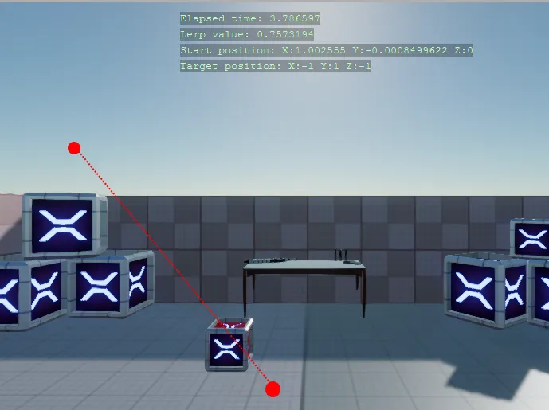

Linear Interpolation
You can find this sample in the tutorial project: Menu → Linear Iterpolation
Explanation
This C# Beginner tutorial covers linear interpolation which is often shortened to 'Lerp'.
Sometimes you want to gradually change a value from a start value to a target value. This process is called linear interpolation.
Stride exposes several Lerp functions for various types. Among them are Vector2, Vector3 and Vector4.

Code
The example consists of a simple timer that resets after a couple seconds. When the timer starts, a start position and a randomly generated target position are stored. A box will move between these two positions.
Every frame a 'Lerp value' is calculated. The lerp value is used to determined what the current position of a moving box should be. Once the timer is done, the current position will become the start position and a new target position is again randomly generated.
using System;
using Stride.Core.Mathematics;
using Stride.Engine;
namespace CSharpBeginner.Code
{
/// <summary>
/// Liniear interpolation or in short 'Lerp' can be used to graduatly change a value from a start value to a target value
/// This is used during animation of models, ui elements, camera movements and many other scenarios
/// This example uses Lerp to graduatly move from a start vector3 coordinate to target Vector3 coordinate
/// The same thing can be done with Vector2 and Vector4
/// <para>
/// https://doc.stride3d.net/latest/en/tutorials/csharpbeginner/linear-interpolation.html
/// </para>
/// </summary>
public class LerpDemo : SyncScript
{
public float AnimationTimer = 5.0f;
private float elapsedTime = 0;
private Random random = new Random();
private Vector3 startPosition;
private Vector3 targetPosition;
public override void Start()
{
SetNewLerpTargetAndResetTimer();
}
public override void Update()
{
// Keep track of elapsed time
var deltaTime = (float)Game.UpdateTime.Elapsed.TotalSeconds;
elapsedTime += deltaTime;
// In order to make use of the lerp method, we need to calculate the 'interpolation value': a value going from 0 to 1.
var lerpValue = elapsedTime / AnimationTimer;
// The Vector3 class exposes a 'Lerp' method that requires a start and target position. The third argument is the lerp value.
Entity.Transform.Position = Vector3.Lerp(startPosition, targetPosition, lerpValue);
// If the elapsedTime passes the animation timer we reset the timer and set a new target
if (elapsedTime > AnimationTimer)
{
SetNewLerpTargetAndResetTimer();
}
DebugText.Print("Elapsed time: " + elapsedTime, new Int2(480, 120));
DebugText.Print("Lerp value: " + lerpValue, new Int2(480, 140));
DebugText.Print("Start position: " + startPosition, new Int2(480, 160));
DebugText.Print("Target position: " + targetPosition, new Int2(480, 180));
}
/// <summary>
/// Resets timer, stores the current position and randomly sets a new target position
/// </summary>
private void SetNewLerpTargetAndResetTimer()
{
elapsedTime = 0;
startPosition = Entity.Transform.Position;
targetPosition = new Vector3(random.Next(-2, 2), random.Next(0, 3), random.Next(-1, 1));
}
}
}